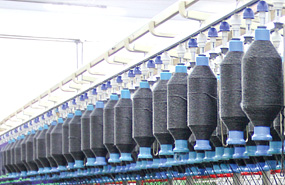

The Drawing Department consists of the newest
autoleveller and high-end drawing machines where 6 to 8
ends of carded / combed sliver are fed.
The result is draw
frame sliver with improved evenness after the drafting and
sliver parelisation is done.